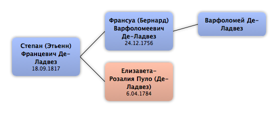

Домой
Домой
 Люди
Люди
 Семьи
Семьи
 Источники
Источники
 Диаграммы
Диаграммы
 Статистика
Статистика
Степан (Этьенн) Францевич Де-Ладвез

Контекст

Родители
| Отец | Дата рождения | Мать | Дата рождения |
|---|---|---|---|
|
Франсуа (Бернард) Варфоломеевич Де-Ладвез
|
24.12.1756 |
 Елизавета-Розалия Пуло Елизавета-Розалия Пуло
|
6.04.1784 |
Родители и дети
| Партнёры | Дата рождения | Дети |
|---|
События
| Тип события | Дата | Место | Описание |
|---|---|---|---|
| Рождение | 18.09.1817 | Москва, Россия | |
| Профессия | 1827 | Москва, Россия | Определён в Академию Художеств, в мастерской живописца П.В. Басина |
| Профессия | 1835 | 2 серебряные медали | |
| Другое событие | 1836 | Карандашный портрет С.Ф. де Л., исполненный в 1836 М.И. Скотти, хранится в Третьяковской галерее. | |
| Профессия | 1838 | 2 и 1 серебряную медали | |
| Профессия | 1839 | 2 золотые медали за программу "Иисусъ передъ народомъ" и звание художник XIV класса с награждением шпагой | |
| Место проживания | 1846 | Рим, Италия | Жил в Италии, где создавал картины |
| Место проживания | 1852 | Санкт-Петербург, Россия | |
| Профессия | 1853 | Звание академика Академии Художеств без исполнения установленной прграммы | |
| Смерть | 29.10.1854 | Санкт-Петербург, Россия |
Факты
Медиа
Примечание
http://www.history-ryazan.ru/node/11685
Художник.
В 1827 – 39 обучался в Императорской Академии Художеств, в мастерской живописца П.В. Басина, откуда вышел с малой золотой медалью и званием художника за программную картину «Иисус перед народом».
В 1839 – 46 работал в Москве,
с 1846 по 1852 жил в Италии, где создал картину «Молодая турчанка после бани» (1851) и копии с произведений П.-Д. Баттони, Рафаэля, Веронезе и др. мастеров.
В 1853 удостоен звания академика.
Кроме названной работы, известны его полотна «Нищий с клюкой» (1845, Смоленский областной музей изобразительных искусств) и «Франческа да Римини» (1852), рисунки «Портрет живописца и литографа А.А. Козлова» (ГТГ) и «Учитель Академии художеств в классе» (ГРМ), литография «Гибель пяти лицеистов... в бурю на лодке в Финском заливе, близ Петербурга».
Карандашный портрет С.Ф. де Л., исполненный в 1836 М.И. Скотти, хранится в Третьяковской галерее.
Художник.
В 1827 – 39 обучался в Императорской Академии Художеств, в мастерской живописца П.В. Басина, откуда вышел с малой золотой медалью и званием художника за программную картину «Иисус перед народом».
В 1839 – 46 работал в Москве,
с 1846 по 1852 жил в Италии, где создал картину «Молодая турчанка после бани» (1851) и копии с произведений П.-Д. Баттони, Рафаэля, Веронезе и др. мастеров.
В 1853 удостоен звания академика.
Кроме названной работы, известны его полотна «Нищий с клюкой» (1845, Смоленский областной музей изобразительных искусств) и «Франческа да Римини» (1852), рисунки «Портрет живописца и литографа А.А. Козлова» (ГТГ) и «Учитель Академии художеств в классе» (ГРМ), литография «Гибель пяти лицеистов... в бурю на лодке в Финском заливе, близ Петербурга».
Карандашный портрет С.Ф. де Л., исполненный в 1836 М.И. Скотти, хранится в Третьяковской галерее.
http://litopys.org.ua/shevchenko/docum10.htm
Деладвез (де Ладвез) Степан Францович (1817 — 1855) — російський художник, разом з Т. Г. Шевченком учився в Академії мистецтв; 1853 р. здобув звання академіка. — 39.
Деладвез (де Ладвез) Степан Францович (1817 — 1855) — російський художник, разом з Т. Г. Шевченком учився в Академії мистецтв; 1853 р. здобув звання академіка. — 39.
http://www.antiqinfo.narod.ru/kondakov/kond-063.htm
Сын порутчика
Сын порутчика
http://forum.artinvestment.ru/showthread.php?t=195551
ББС: ДЕЛАДВЕЗ (Д е - Л а д в е з ), Степан Францевич .
Живописец, р. 18 (30).9.1817 в Москве, ум. 29.10 (10. 11). 1854 (по некоторым источникам - в янв. 1855) в Петербурге.
Учился в АХ (с 1827) у П. В. Басина. Получил медали: в 1835 — малую за рисунок; 1838 — малую и две большие (одну из них за картину «Александр, принимаю- щий лекарство от врача Филиппа») серебр.; 1839 — ма- лую золот. и звание художника за программу «Иисус перед народом». В 1839 - 1846 работал в Москве. В 1846 - 1852 жил в Италии, где исполнил картину «Молодая турчанка после бани» (1851) и копии с произв.: П.-Д. Баттони («Падение Симона волхва», 1849, Музей АХ СССР, Ле- нинград), Рафаэля («Закон, окруженный добродетеля- ми, или Мудрость, сила и умеренность», 1850, там же);. Веронезе («Похищение Европы Юпитером», 1851-52, там же) и др. В 1853 получил звание академика. На выставках АХ экспонировались его произв.: в 1846 — «Нищий с клюкой» («Старик с посохом», 1845, Смоленский обл. музей изобр. и прикл. искусств),1852 — «Франческа да Римини» и др.
Выполнил также литографию «Гибель пяти лицеистов... в бурю на лодке в Финском заливе, близ Петербурга». Его рисунки хранятся в ГТГ («Портрет А. А. Козлова, живописца и литографа» (итал. кар.) и ГРМ («Учитель Академии художеств в классе» — кар.). Портрет Д. исполнил М. И. Скотти (итал. кар., 1836, ГТГ).
ЛИТ.: К о н д а к о в, ч. 2, с. 58.— РБС, т. Дабелов — Дядь- ковский, с. 180.— Отчеты ИОПХ: за 184t-42. Спб., 1842, с. 18; за 1844 — 45. Спб. 1846, с. 11, 15.— Сб. РИО, т. 60, с. 192.— Oтчет ИАХ за 1866 — 67. Спб., 1870, с. 31.— Р а м а з а н о в, с. 265 — 266.— Юндолов, с. 70.— Сомов т. 2, с. 199 (указ.).— Т е в я ш о в, с. 91 — 92.— Смоленский обл. краевед. музей. Худож. галерея. Смоленск, 1958, с. 36.— Указатели худож. произв., выставленных в залах ИАХ.Спб.: 1846 с. 9; 1851, с. 3; 1852, с. 8, 12.— Б-ка «Портрет в рисунке». (XIX — нач. ХХ в.). Каталог. М., 1941, с. 12.— «Худож. газета» (Спб.), 1841, # 24, с. 8.— «Библиотека для чтения» (Спб.), 1850, т. 104, ноябрь, с. 81 — 82.— «Pyc. старина» (Спб.), 1892, т. 73, кн. 2, июнь, с. 440.— Тhiemе - Бесkег, Т. 8, стр. 577.
ББС: ДЕЛАДВЕЗ (Д е - Л а д в е з ), Степан Францевич .
Живописец, р. 18 (30).9.1817 в Москве, ум. 29.10 (10. 11). 1854 (по некоторым источникам - в янв. 1855) в Петербурге.
Учился в АХ (с 1827) у П. В. Басина. Получил медали: в 1835 — малую за рисунок; 1838 — малую и две большие (одну из них за картину «Александр, принимаю- щий лекарство от врача Филиппа») серебр.; 1839 — ма- лую золот. и звание художника за программу «Иисус перед народом». В 1839 - 1846 работал в Москве. В 1846 - 1852 жил в Италии, где исполнил картину «Молодая турчанка после бани» (1851) и копии с произв.: П.-Д. Баттони («Падение Симона волхва», 1849, Музей АХ СССР, Ле- нинград), Рафаэля («Закон, окруженный добродетеля- ми, или Мудрость, сила и умеренность», 1850, там же);. Веронезе («Похищение Европы Юпитером», 1851-52, там же) и др. В 1853 получил звание академика. На выставках АХ экспонировались его произв.: в 1846 — «Нищий с клюкой» («Старик с посохом», 1845, Смоленский обл. музей изобр. и прикл. искусств),1852 — «Франческа да Римини» и др.
Выполнил также литографию «Гибель пяти лицеистов... в бурю на лодке в Финском заливе, близ Петербурга». Его рисунки хранятся в ГТГ («Портрет А. А. Козлова, живописца и литографа» (итал. кар.) и ГРМ («Учитель Академии художеств в классе» — кар.). Портрет Д. исполнил М. И. Скотти (итал. кар., 1836, ГТГ).
ЛИТ.: К о н д а к о в, ч. 2, с. 58.— РБС, т. Дабелов — Дядь- ковский, с. 180.— Отчеты ИОПХ: за 184t-42. Спб., 1842, с. 18; за 1844 — 45. Спб. 1846, с. 11, 15.— Сб. РИО, т. 60, с. 192.— Oтчет ИАХ за 1866 — 67. Спб., 1870, с. 31.— Р а м а з а н о в, с. 265 — 266.— Юндолов, с. 70.— Сомов т. 2, с. 199 (указ.).— Т е в я ш о в, с. 91 — 92.— Смоленский обл. краевед. музей. Худож. галерея. Смоленск, 1958, с. 36.— Указатели худож. произв., выставленных в залах ИАХ.Спб.: 1846 с. 9; 1851, с. 3; 1852, с. 8, 12.— Б-ка «Портрет в рисунке». (XIX — нач. ХХ в.). Каталог. М., 1941, с. 12.— «Худож. газета» (Спб.), 1841, # 24, с. 8.— «Библиотека для чтения» (Спб.), 1850, т. 104, ноябрь, с. 81 — 82.— «Pyc. старина» (Спб.), 1892, т. 73, кн. 2, июнь, с. 440.— Тhiemе - Бесkег, Т. 8, стр. 577.
Источники
Родство
| Имя | Степень родства | Дата рождения | Место рождения | Дата смерти | Место смерти |
|---|---|---|---|---|---|
| Братья и сёстры | |||||
| Брат | 14.10.1807 | Москва, Россия | 26.06.1857 | Москва, Россия | |
| Брат | 1812 | Москва, Россия | 1850 | Рязань, Россия | |
| Брат | 9.7.1813 | ||||
| Родителей | |||||
| Отец | 24.12.1756 | Франция | 2.09.1846 | Москва, Россия | |
| Мать | 6.04.1784 | 3.02.1845 | Москва, Россия | ||
| Дедушки и бабушки | |||||
| Дедушка | |||||
| Шурины и невестки | |||||
| Невестка | |||||
| Племянники и племянницы | |||||
| Племянник | 9.03.1844 | 23.09.1887 | |||
| Племянница | 24.07.1845 | ||||
| Племянница | 2.09.1846 | ||||
| Племянник | 2.01.1847 | Москва, Россия | |||
| Племянница | 27.09.1849 | ||||
| Племянник | 28.09.1849 | Москва, Россия | |||
| Внучатые племянники и внучатые племянницы | |||||
| Внучатая племянница | |||||
| Внучатая племянница | |||||
| Внучатый племянник | 30.01.1870 | ||||
| Внучатый племянник | 19.11.1871 | Москва, Россия | 25.04.1921 | Челябинск, Россия | |
| Внучатый племянник | 23.09.1880 | ||||
| Внучатый племянник | 23.2.1888 | Москва, Россия | 05.08.1929 | Москва, СССР | |
| Правнучатые племянники и правнучатые племянницы | |||||
| Правнучатый племянник | 31.12.1895 | г. Сороки Бессарабской губернии, Россия | 27.10.1937 | Оренб. обл, СССР | |
| Правнучатая племянница | 23.10.1899 | Москва, Россия | |||
| Правнучатый племянник | 18.06.1900 | ||||
| Правнучатый племянник | 16.07.1900 | ||||
| Правнучатый племянник | 21.07.1900 | Москва, Россия | 1947 | ||
| Правнучатый племянник | 1901 | ||||
| Правнучатая племянница | 22.09.1902 | Тифлис (Тбилиси), Грузия | |||
| Правнучатая племянница | 1905 | ||||
| Правнучатая племянница | 03.12.1905 | Москва, Россия | |||
| Правнучатая племянница | 10.04.1907 | Двинск, Россия | |||
| Правнучатая племянница | 16.02.1910 | Санкт-Петербург, Россия | |||
| Правнучатая племянница | 23.03.1911 | Москва, Россия | |||
| Правнучатый племянник | 10.05.1912 | Москва, Россия | |||
| Пра-правнучатые племянники и пра-правнучатые племянницы | |||||
| Пра-правнучатый племянник | |||||
| Пра-правнучатая племянница | |||||
| Пра-правнучатый племянник | |||||
| Пра-правнучатая племянница | |||||
| Пра-правнучатая племянница | |||||
| Пра-правнучатый племянник | 22.08.1926 | Хабаровск, СССР | 08.05.2006 | Санкт-Петербург, Россия | |
| Пра-пра-правнучатые племянники и пра-пра-правнучатые племянницы | |||||
| Пра-пра-правнучатый племянник | |||||
| Пра-пра-правнучатый племянник | |||||
| Пра-пра-правнучатая племянница | 19.03.1963 | Ленинград, СССР | |||
| Пра-пра-правнучатый племянник | 22.02.1965 | Ленинград, СССР | |||
| Пра-пра-пра-правнучатые племянники и пра-пра-пра-правнучатые племянницы | |||||
| Пра-пра-пра-правнучатый племянник | 01.09.1988 | Ленинград, СССР | |||
| Пра-пра-пра-правнучатый племянник | 19.11.1991 | Санкт-Петербург, Россия | |||
| Пра-пра-пра-правнучатый племянник | 15.07.1995 | Санкт-Петербург, Россия | |||